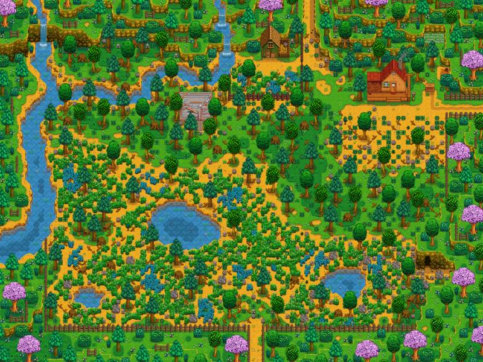

Cultivar
Sembrar según la estación, cosechar y convertir el terreno en una fuente de recursos.
La tierra es el comienzo, pero también una forma de jugar a tu manera.

Al principio un poco descuidada, pero acá no sólo podes trabajar la tierra: decidís qué forma tendrá tu nuevo hogar.
Se suele empezar despejando el terreno y con un par de cultivos, después aparece la posibilidad de construir edificios, instalar máquinas, criar animales y llenar los espacios con caminos y detalles. La granja termina contando una historia distinta en cada partida.
Lo importante no es alcanzar una granja perfecta. Es que poco a poco se vuelva reconocible como tu lugar dentro del Valle.
Sembrar según la estación, cosechar y convertir el terreno en una fuente de recursos.
Construir establos y gallineros, alimentar animales y sumar nuevas rutinas a tus días.
Usar máquinas para convertir cosechas y recursos en productos con nuevos usos y valor.
Mejorar la casa y convertirla poco a poco en un espacio vivido, no sólo funcional.
Distribuir cercas, caminos, árboles y edificios para que el terreno tenga identidad.
El invernadero permite cultivar fuera de las restricciones normales de estación una vez restaurado.
Stardew Valley ofrece ocho mapas de granja. Algunos favorecen la pesca, la recolección, la minería, el combate, el multijugador o la crianza de animales, mientras la Granja Estándar prioriza el espacio agrícola. Elegir uno es también elegir una pequeña personalidad para tu partida.
Ver los tipos de granja en la Wiki →Cada mejora, cosecha, animal o pequeña decoración, la granja se expande y refleja la vida que elegiste construir